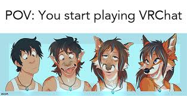

Занурення в ігровий світ (VR)
VR (Віртуальна реальність) дозволяє гравцю буквально опинитися всередині гри. Це не просто перегляд 3D-зображення, а повноцінне фізичне занурення, де рухи голови та рук безпосередньо впливають на ігровий процес. Це змінює підхід до шутерів, спортивних ігор та симуляторів, роблячи їх максимально реалістичними.

Доповнена Реальність (AR)
На відміну від VR, AR (Доповнена реальність) змішує віртуальний і реальний світи. Це дозволяє розміщувати ігрові об'єкти, як-от покемонів чи віртуальні меблі, у твоїй реальній кімнаті. Ця технологія має величезний потенціал не лише для ігор, але й для освіти та роботи.
VR-спільнота
Був би у вас VR-Headset я ставлю свою почку що ви грали б саме Vrchat, а це автоматичне ставання фурі.
